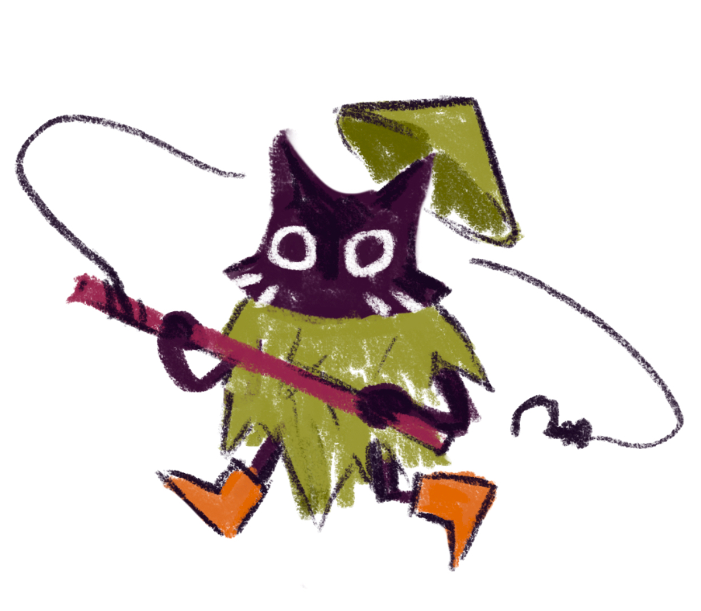
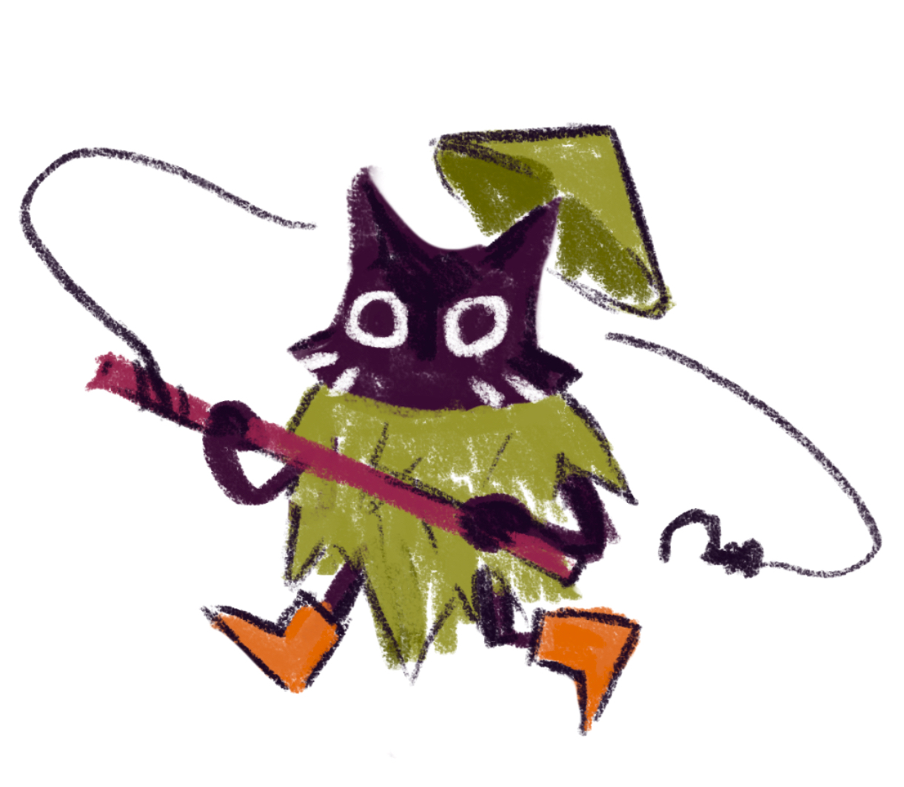

Суть игры
3D-платформер про кота-рыбака. Игроку нужно маневрировать по площадкам и использовать удочку, чтобы достать рыбу. Ограниченная длина лески заставляет рисковать, покидая безопасные места, ведь цель уровня — собрать весь улов и не намочить лапы!
Скриншоты
 
